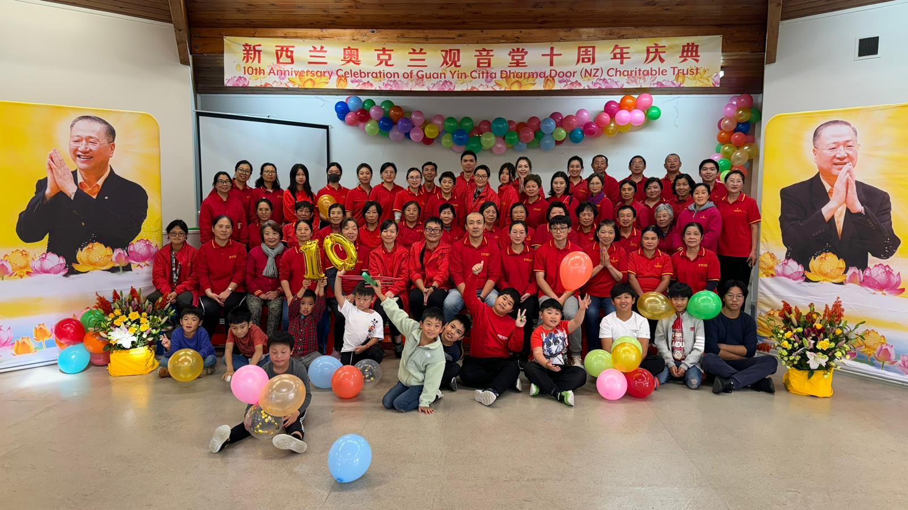
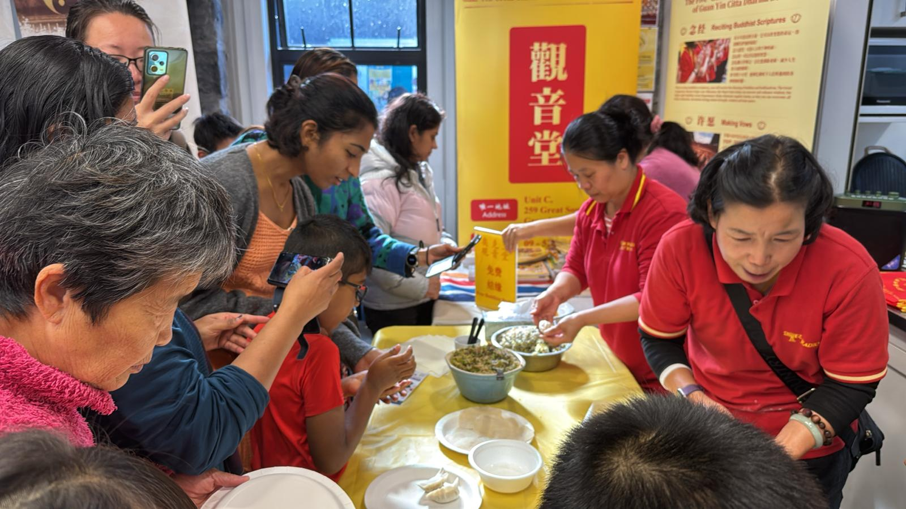

Guan Yin Citta
Dharma Door心灵
法门
The only officially registered Guan Yin Citta Dharma Door Buddhist charity in New Zealand. Promoting Buddhist values through sutra recitation, making vows, and life liberation.新西兰唯一官方注册的心灵法门佛教慈善机构。通过念经、许愿、放生弘扬佛法，净化心灵。
About Auckland Guan Yin Citta关于奥克兰观音堂
Auckland Guan Yin Citta (Guanyin Citta Dharma Door NZ Charitable Trust) was established in 2014 as a Buddhist practice and Dharma propagation centre following the principles of Guan Yin Citta Dharma Door. We are dedicated to spreading Buddhist teachings and the compassionate spirit of Guan Yin Bodhisattva, guiding people to study Buddhism, cultivate the mind, and grow in wisdom and compassion.奥克兰观音堂（Guanyin Citta Dharma Door NZ Charitable Trust）成立于2014年，是依止心灵法门宗旨的佛教修学与弘法道场，致力于弘扬佛法与观世音菩萨慈悲精神，引导大众学佛修心、增长智慧与慈悲。
The Five Treasures五大法宝
Our core practice rests on five essential methods that help practitioners apply the Dharma in daily life.心灵法门以"五大法宝"为修行核心，帮助修行者在现实生活中落实佛法。
Sutra Recitation念经
Reciting Buddhist sutras to purify the mind, eliminate karmic obstacles, awaken wisdom, and cultivate virtuous roots.通过念诵佛教经典，净化心灵，消除业障，启迪智慧，增长善根。
Learn more了解更多 trending_flatMaking Vows许愿
Setting sincere vows to elevate one's spiritual state, help others, and accomplish meritorious deeds.发心立愿，提升境界，救渡他人，成就功德。
Learn more了解更多 trending_flatLife Liberation放生
The three types of giving — material, dharma, and fearlessness — all present together, yielding immeasurable merit.财布施，法布施，无畏布施。三施皆具，功德无量。
Learn more了解更多 trending_flatPlain-Language Dharma白话佛法
Integrating the essence of Buddhist wisdom into everyday life to purify the mind and awaken insight.将佛法融入生活，净化心灵，启迪智慧。
Learn more了解更多 trending_flatGreat Repentance大忏悔
Sincere repentance — acknowledging past misdeeds, regretting future wrongs, and vowing never to repeat them.至诚忏悔，忏其前愆，悔其后过，永不复作。
Learn more了解更多 trending_flatA heart full of compassion is the strongest protection one can ever have in this world.一颗充满慈悲的心，是世间最强大的庇护。
-- Master Jun Hong Lu—— 卢军宏老师
Our Global Community我们的全球社区
Join practitioners worldwide in prayer, meditation, and service.与全球修行者一起祈祷、修行、服务众生。

Guan Yin Citta Dharma Door Practice Center奥克兰观音堂
Our Auckland headquarters for Buddhist study, sutra recitation, and community gatherings.观音堂奥克兰总部，是佛法学习、诵经修行与社区聚会的场所。
Buddhism Study Sessions学佛班
North Shore Study Session北岸学佛班
Details详情10:00 AM – 12:15 PM
Glenfield Mission Hall
Apr 4, 18 · May 9, 30 · Jun 13, 27
East – Panmure Study Session东区 – 潘牟尔学佛班
Details详情10:30 AM – 2:00 PM
Panmure Community Hall
Apr 11 · May 9 · Jun 20
West – New Lynn Study Session西区 – 新林恩学佛班
Details详情10:30 AM – 1:30 PM
Glass House, 45 Totara Ave, New Lynn
Apr 18 · May 16 · Jun 13
All sessions open to everyone — bring a friend!所有学佛班欢迎所有人参加，欢迎带朋友一起来！
Get Involved --
Help Our Communities!参与我们 ——
助力我们的社区！
Your kind donation helps us continue our spiritual activities, Dharma sharing, and community support. Every contribution, big or small, makes a difference in spreading compassion and wisdom.您的慷慨捐助帮助我们延续修行活动、弘扬佛法、支持社区。无论捐款多少，每一份爱心都能播撒慈悲与智慧的种子。
